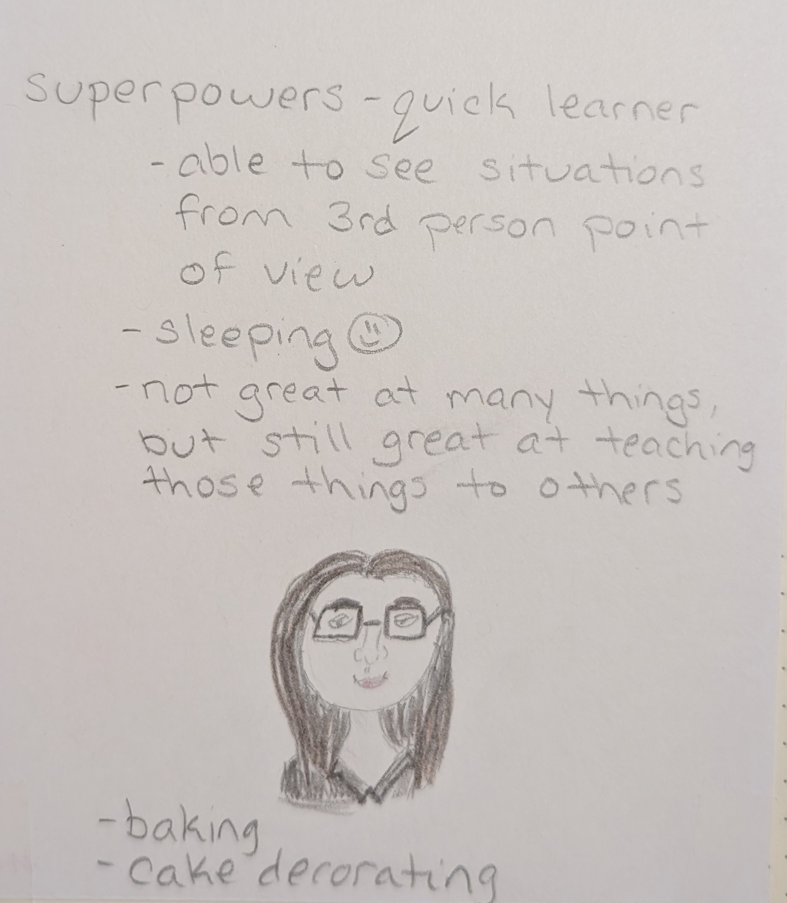
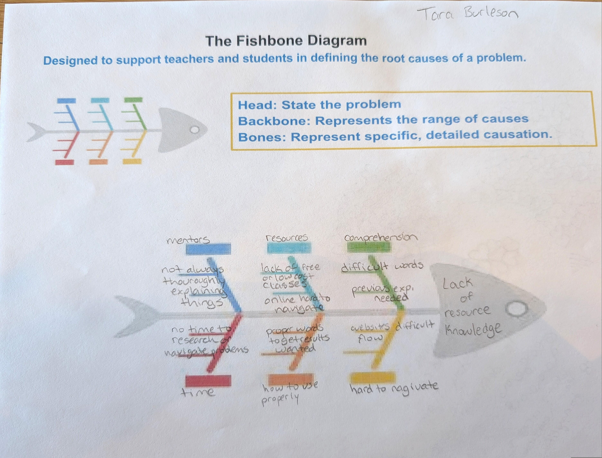
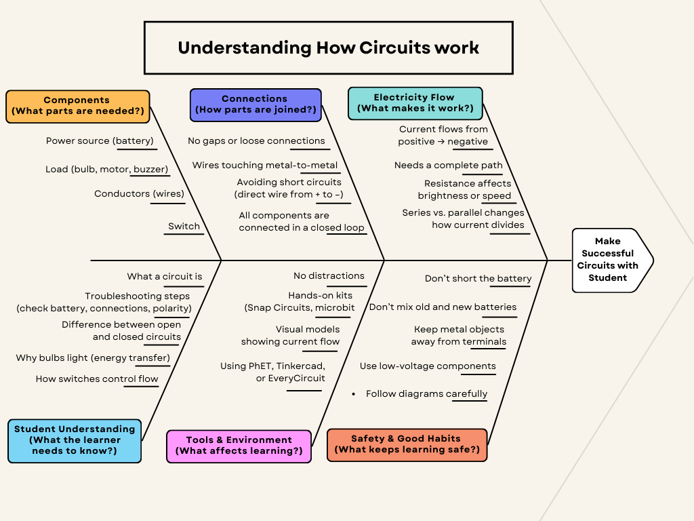
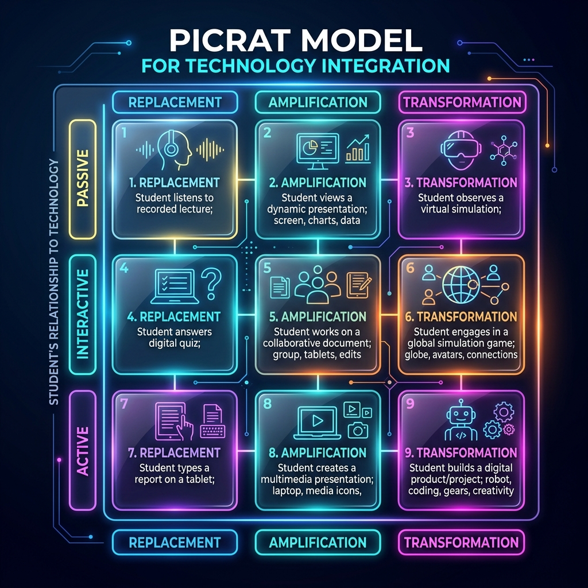

Introduction
Welcome to my Digital Navigation Capstone project. This site documents the learning path I designed to help my student build a clear and confident understanding of electrical circuits. While planning this project, I wanted to create a pathway that made circuits feel manageable — breaking down the tools, vocabulary, and concepts so my student could build confidence one step at a time. To support that, I created a sequence that begins with simple explanations and gradually builds toward hands‑on engineering and coding with the Micro:bit. This capstone presents the learning pathway I designed and the progress my student made throughout the project.
Learner Persona

Click to enlarge
This learner persona was created at the very beginning of my Digital Navigation coursework. It reflects how I saw myself as a learner and helped me think about my own strengths, challenges, and habits as I began designing learning experiences for others.
Since creating it, I’ve grown more confident using digital tools and designing learning pathways. The core parts of how I learn haven’t changed, but I’ve become more intentional, reflective, and comfortable experimenting with new tools and troubleshooting as I go. Over time, I’ve learned how to use my strengths more purposefully when planning and supporting learning experiences.
Learning Obstacles Breakdown

Click to enlarge
I made this handwritten fishbone around the idea of limited resource knowledge. I used it to lay out possible challenges a learner might face—like unfamiliar vocabulary, not knowing where to start, scattered materials, and limited experience.
Essential Ideas in Electrical Circuits

Click to enlarge
I created this fishbone to break down the different pieces involved in understanding how circuits work. I organized the ideas into areas like components, connections, electricity flow, troubleshooting, and safety. Laying it out this way helped me see the main concepts a learner would need to understand and how those ideas fit together.
PICRAT Overview

Click to enlarge
This PICRAT shows some early ideas for how technology could support learning about circuits.
Digital Tools at a Glance
Across the project, my student used:
- PhET Circuit Construction Kit – to explore and test virtual circuits
- Snap Circuits – to build and observe real‑world circuits
- Micro:bit + MakeCode – to create programmable, interactive systems
- Kindle Scribe – to take notes, sketch ideas, and create comparison charts
These tools supported different parts of the learning process, from early exploration to final design decisions.
⭐ Digital Tools Used in Planning and Building This Project
To design this learning pathway and create the final website, I used several digital tools that supported my planning, organization, and presentation of the project.
Copilot
I used Copilot to brainstorm lesson ideas, refine explanations, and structure the learning sequence. Copilot also supported me in planning the overall website layout and organization, helping me create a clear, consistent structure across all pages.
Gamma
I used Gamma to create clean, organized lesson plans and visual materials. Gamma helped me turn rough ideas into polished, easy‑to‑read layouts that supported both my planning process and my student’s understanding.
Gemini
I used Gemini as an additional tool for generating ideas, checking clarity, and exploring alternative ways to explain concepts. It helped me compare approaches and refine the instructional flow.
Website Builder (Antigravity)
I used Antigravity as the website builder to create the structure and layout for this project. Antigravity includes both visual design tools and AI‑supported coding features, which allowed me to customize the site beyond basic templates. I also collaborated with a peer who helped me learn how to use some of Antigravity’s more advanced, coding‑assisted options. This combination of support and exploration helped me build a clear, functional, and visually consistent final website.
Explore the Project
This pathway shows how each stage builds toward the final house project.